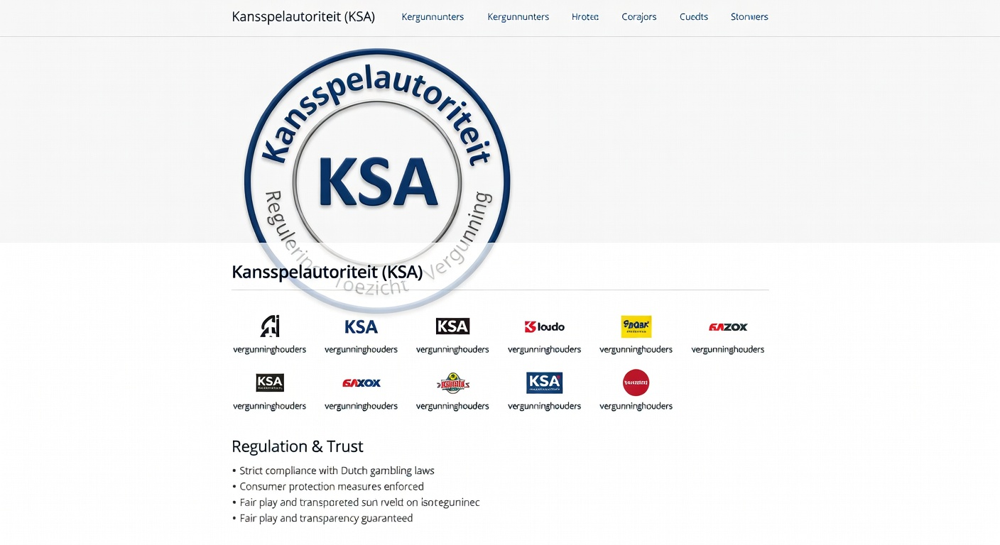
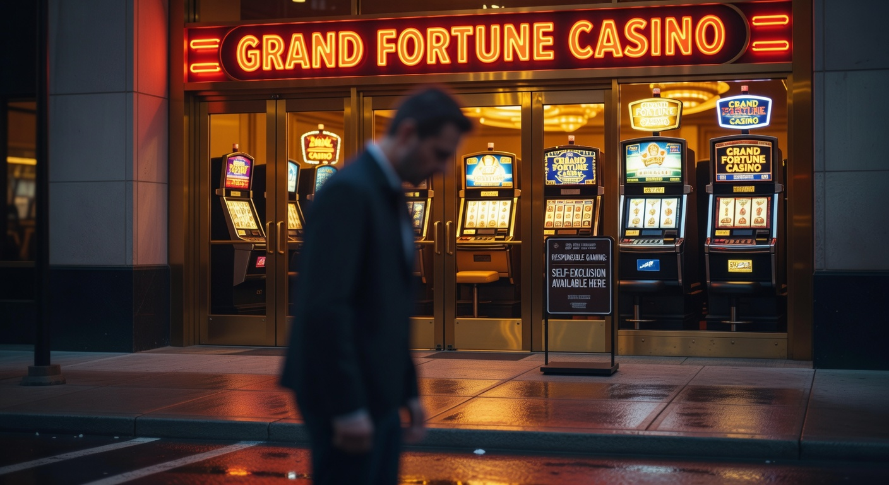
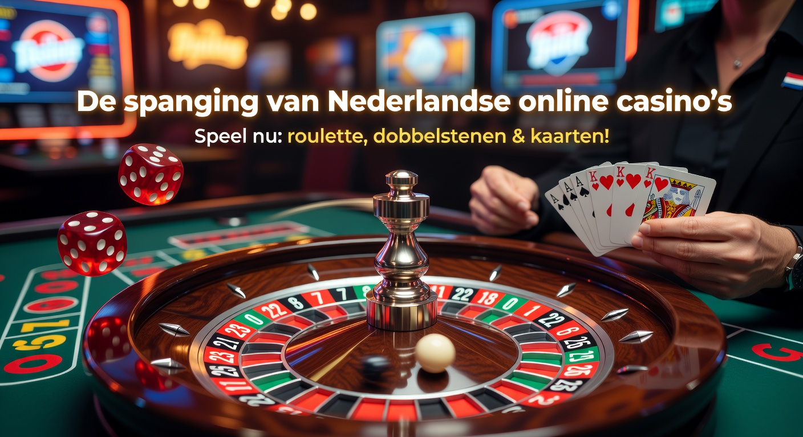

Legal online casino Nederland: De gids voor veilig gokken in 2026
Sinds de openstelling van de online kansspelmarkt in oktober 2021 is het landschap van online gokken drastisch veranderd. In 2026 is de markt volwassen geworden en hebben spelers in Nederland de keuze uit een breed scala aan betrouwbare aanbieders. Het vinden van een legal online casino nederland is tegenwoordig essentieel voor wie op zoek is naar een veilige spelomgeving, eerlijke winkansen en gegarandeerde uitbetalingen.
In deze uitgebreide gids duiken we diep in de wereld van kansspelen in 2026. We bespreken niet alleen de beste aanbieders van dit moment, maar leggen ook uit waar je op moet letten bij het maken van je keuze. Of je nu een fan bent van klassieke gokkasten, liever plaatsneemt aan een live blackjacktafel of op zoek bent naar de hoogste welkomstbonus, een legal online casino nederland biedt de bescherming die je als consument verdient.
De Nederlandse Kansspelautoriteit (Ksa) houdt streng toezicht op alle vergunninghouders. Dit betekent dat elk legal online casino nederland moet voldoen aan strikte eisen op het gebied van verslavingspreventie, reclame-uitingen en de veiligheid van spelersgegevens. In dit artikel ontdek je waarom spelen bij een vergund casino de enige verstandige keuze is in 2026.
Overzicht van alle legale aanbieders met een KSA-vergunning
Het aantal vergunde aanbieders is in 2026 stabiel, maar de kwaliteit van de dienstverlening is hoger dan ooit. Elke aanbieder die de Nederlandse markt betreedt, moet een intensief vergunningstraject doorlopen bij de Kansspelautoriteit. Hieronder bespreken we de meest prominente namen die momenteel actief zijn als legal online casino nederland.
De markt wordt gedomineerd door zowel internationale zwaargewichten als lokale helden. Voor spelers betekent dit dat er voor elk type gokker wel een geschikte match te vinden is. Of het nu gaat om de snelheid van uitbetalen, het aanbod aan live spellen of de gebruiksvriendelijkheid van de mobiele app, elk legal online casino nederland probeert zich te onderscheiden met unieke features.
Hieronder volgt een overzicht van de top-platforms die in 2026 de standaard zetten voor online entertainment in Nederland. Elk van deze casino's beschikt over de noodzakelijke licentie en wordt regelmatig gecontroleerd op eerlijkheid en veiligheid.
LeoVegas: De koning van het mobiele casino
LeoVegas staat in 2026 nog steeds bekend als de onbetwiste leider op het gebied van mobiel gokken. Hun platform is volledig geoptimaliseerd voor smartphones, wat essentieel is aangezien meer dan 80% van de Nederlandse spelers inmiddels via hun telefoon speelt. Als legal online casino nederland biedt LeoVegas een naadloze ervaring met een bekroonde app die snelheid en stabiliteit combineert.
Het spelaanbod bij LeoVegas is gigantisch. Van exclusieve slots tot een uitgebreid live casino, de variatie is indrukwekkend. Bovendien staat LeoVegas bekend om hun snelle verificatieproces via iDIN, waardoor je binnen enkele minuten kunt beginnen met spelen. Hun klantenservice is 24/7 bereikbaar en spreekt vloeiend Nederlands, wat bijdraagt aan de betrouwbaarheid van dit platform.
Kansino: Razendsnelle uitbetalingen zonder poespas
Kansino heeft een unieke positie verworven als het legal online casino nederland voor spelers die geen behoefte hebben aan ingewikkelde bonussen of loyaliteitsprogramma's. Hun focus ligt puur op de spelervaring en de snelheid van transacties. Dankzij de implementatie van Instant Payment technologie staan winsten bij Kansino vaak binnen enkele minuten op de bankrekening van de speler.
Het ontbreken van een welkomstbonus wordt door veel spelers als een voordeel gezien, omdat er geen sprake is van rondspeelvoorwaarden. Je speelt altijd met je eigen geld en je kunt uitbetalen wanneer je maar wilt. Met een bibliotheek van meer dan 3.000 spellen biedt Kansino een van de grootste collecties in Nederland, ondersteund door top-providers zoals NetEnt, Evolution en Pragmatic Play.
TOTO Casino: De oer-Hollandse favoriet
TOTO is een naam die diep geworteld is in de Nederlandse cultuur. Wat begon als een platform voor sportweddenschappen is in 2026 uitgegroeid tot een volwaardig en zeer populair legal online casino nederland. De kracht van TOTO ligt in hun lokale benadering; ze begrijpen precies wat de Nederlandse speler wil.
In het TOTO Casino vind je exclusieve spellen zoals de TOTO Slodder slots en Nederlandse dealers in het live casino. Omdat TOTO onderdeel is van de Nederlandse Loterij, vloeit een deel van de opbrengst terug naar de Nederlandse sport en samenleving. Dit geeft veel spelers een extra goed gevoel bij het plaatsen van een inzet bij dit vertrouwde legal online casino nederland.
Unibet: Marktleider met een gigantisch aanbod
Unibet is wereldwijd een gigant en hun aanwezigheid in Nederland is in 2026 sterker dan ooit. Als legal online casino nederland biedt Unibet niet alleen casino spellen en een live casino, maar ook een uitgebreid sportsbook, pokerroom en bingo-sectie. Het is de ultieme one-stop-shop voor de veelzijdige gokker.
De "Unibet Community" is een uniek aspect waarbij spelers tips kunnen delen en kunnen deelnemen aan exclusieve toernooien. Hun platform is technisch zeer geavanceerd, met diepgaande statistieken voor sportwedders en een soepele interface voor casinospelers. Unibet zet ook zwaar in op verantwoord gokken met tools die verder gaan dan de wettelijke vereisten van de Ksa.
711 Casino: Hoge bonussen en ruime spelkeuze
711 Casino is een relatief nieuwe speler die snel harten heeft gestolen in Nederland. Dit legal online casino nederland staat bekend om zijn royale bonusstructuur. Waar andere casino's terughoudend zijn geworden met promoties door strengere regelgeving in 2026, weet 711 binnen de kaders van de wet toch zeer aantrekkelijke aanbiedingen te presenteren aan spelers van 24 jaar en ouder.
De website van 711 is overzichtelijk en de spelcategorieën zijn logisch ingedeeld. Of je nu zoekt naar klassieke fruitautomaten of de nieuwste Megaways slots, je vindt ze hier allemaal. De klantgerichtheid van dit legal online casino nederland is hoog, met een supportteam dat snel en adequaat reageert op alle vragen.
Hoe herken je een betrouwbaar online casino?
Met de groei van de markt in 2026 is het cruciaal dat spelers het onderscheid kunnen maken tussen een legal online casino nederland en illegale offshore websites. Het herkennen van een betrouwbaar platform is gelukkig eenvoudiger dan het lijkt, mits je weet waar je op moet letten. Het eerste en belangrijkste kenmerk is het logo van de Kansspelautoriteit.
Elk vergund casino is verplicht om het keurmerk "Vergunninghouder Kansspelautoriteit" duidelijk op hun website te tonen. Daarnaast kun je de status van een aanbieder altijd controleren in de 'Kansspelwijzer' op de officiële website van de Kansspelautoriteit. Spelen bij een niet-vergund casino brengt grote risico's met zich mee, zoals het niet uitbetalen van winsten en het ontbreken van bescherming bij geschillen.
Een ander kenmerk van een legal online casino nederland is de verplichte iDIN-verificatie bij aanmelding. Dit systeem koppelt je account aan je bankgegevens om je leeftijd en identiteit te bevestigen. Illegale casino's omzeilen deze stappen vaak, wat een rode vlag moet zijn voor elke speler. Veiligheid begint bij een transparant registratieproces.
| Kenmerk | Legal Online Casino Nederland | Illegaal Online Casino |
|---|---|---|
| Licentie | Nederlandse Ksa-vergunning | Geen of buitenlandse (Curaçao, etc.) |
| Betaalmethode | iDEAL, Creditcard, Bankoverboeking | Crypto, vage e-wallets |
| Identificatie | Verplichte iDIN en documentcheck | Vaak geen controle bij storting |
| Spelerbescherming | CRUKS aansluiting verplicht | Geen centrale uitsluiting |
| Klantenservice | Nederlandstalig en bereikbaar | Vaak alleen Engels of onbereikbaar |
De voordelen van spelen bij een vergunde aanbieder
Kiezen voor een legal online casino nederland biedt veel meer dan alleen de zekerheid dat de overheid meekijkt. De gehele infrastructuur is ontworpen om de consument te beschermen. In 2026 zijn deze standaarden strenger dan ooit, wat resulteert in een van de veiligste gokomgevingen ter wereld. Spelers hoeven zich geen zorgen te maken over de integriteit van de software of de veiligheid van hun persoonlijke gegevens.
Daarnaast is de kwaliteit van de spellen bij een legal online casino nederland gegarandeerd. Aanbieders mogen alleen software gebruiken van gecertificeerde ontwikkelaars die gebruikmaken van een Random Number Generator (RNG). Dit zorgt ervoor dat elke draai aan een gokkast of elke gedeelde kaart in het live casino 100% willekeurig en eerlijk is.
Consumentenbescherming en eerlijk spel
Een cruciaal voordeel van een legal online casino nederland is de zorgplicht van de aanbieder. In 2026 zijn casino's verplicht om het speelgedrag van hun klanten te monitoren. Als er signalen zijn van problematisch gokken, moet het casino ingrijpen. Dit kan variëren van een waarschuwingsbericht tot een tijdelijke blokkade van het account. Deze proactieve houding helpt verslaving te voorkomen voordat het een serieus probleem wordt.
Bovendien zijn je tegoeden bij een legal online casino nederland veilig. De Ksa eist dat spelersgelden op een aparte bankrekening worden beheerd, gescheiden van het werkkapitaal van het bedrijf. Mocht een casino in financiële problemen komen, dan blijven de tegoeden van de spelers beschermd en opeisbaar. Dit is een geruststellende gedachte die je bij illegale aanbieders simpelweg niet hebt.
Veilige betaalmethoden zoals iDEAL
In Nederland is iDEAL de absolute standaard voor online betalingen. Elk legal online casino nederland biedt deze betaalmethode aan, wat zorgt voor vertrouwde en snelle transacties via je eigen bankapp. Of je nu klant bent bij ABN AMRO, Rabobank of een andere Nederlandse bank, je stortingen worden direct verwerkt via een beveiligde verbinding.
Naast iDEAL zien we in 2026 ook steeds meer gebruik van creditcards en directe bankoverschrijvingen. Het belangrijkste is dat alle financiële transacties bij een legal online casino nederland versleuteld zijn met de nieuwste SSL-technologieën. Dit voorkomt dat kwaadwillenden toegang krijgen tot je betaalgegevens. Snelle uitbetalingen zijn de norm geworden, waarbij winsten vaak dezelfde dag nog op je rekening staan.
Voor wie op zoek is naar specifieke informatie over betalingen, is het raadzaam om te kijken naar een casino online ideal voor de beste ervaring. De integratie van iDEAL zorgt niet alleen voor gemak, maar dient ook als een extra verificatielaag voor je identiteit.
De rol van de Kansspelautoriteit (KSA)

De Kansspelautoriteit, vaak afgekort als Ksa, is de onafhankelijke toezichthouder op de markt voor kansspelen in Nederland. Hun missie is helder: het voorkomen van kansspelverslaving, het bestrijden van illegaliteit en het beschermen van de consument. Sinds 2021 heeft de Ksa honderden vergunningsaanvragen beoordeeld, waarvan er slechts een beperkt aantal is toegewezen aan een legal online casino nederland.
De Ksa voert regelmatig controles uit op de naleving van de Wet Kansspelen op Afstand (Wok). Hierbij wordt gekeken naar reclame-uitingen, het aanbod van spellen en de effectiviteit van de verslavingspreventie. Een legal online casino nederland dat zich niet aan de regels houdt, riskeert torenhoge boetes of zelfs het intrekken van de vergunning. Dit strikte regime zorgt ervoor dat alleen de meest integere bedrijven op de Nederlandse markt actief blijven.
In 2026 heeft de Ksa ook een belangrijke rol in het voorlichten van het publiek. Via campagnes wijzen zij spelers op de gevaren van illegaal gokken en het belang van het instellen van speellimieten. De autoriteit werkt nauw samen met internationale partners om ook het aanbod van illegale websites die zich op Nederland richten aan te pakken. Spelen bij een legal online casino nederland betekent dus ook dat je bijdraagt aan een gezonde en gereguleerde markt.
Wat is het Centraal Register Uitsluiting Kansspelen (CRUKS)?

Een van de belangrijkste instrumenten voor spelersbescherming in Nederland is CRUKS. Dit staat voor Centraal Register Uitsluiting Kansspelen. Elk legal online casino nederland is wettelijk verplicht om bij elke aanmelding en elke inlogsessie te controleren of een speler geregistreerd staat in dit systeem. Als je in CRUKS staat, krijg je onherroepelijk geen toegang tot het casino, zowel online als fysiek (zoals bij Holland Casino).
Registratie in CRUKS kan vrijwillig gebeuren door de speler zelf als hij merkt dat hij de controle over zijn gokgedrag verliest. Dit kan voor een periode van zes maanden tot meerdere jaren. In uitzonderlijke gevallen kan een legal online casino nederland of een naaste ook een verzoek tot onvrijwillige registratie indienen bij de Ksa. Dit gebeurt echter alleen na een zorgvuldige procedure.
Het bestaan van CRUKS is een van de redenen waarom een legal online casino nederland zoveel veiliger is dan een buitenlandse aanbieder. Bij illegale sites kun je vaak blijven spelen, zelfs als je aangeeft een probleem te hebben. Het Nederlandse systeem zet de gezondheid van de speler boven de winst van het casino. Het is een essentieel vangnet in de moderne gokmarkt van 2026.
Populaire spellen in het Nederlandse aanbod

Het aanbod aan spellen bij een gemiddeld legal online casino nederland is in 2026 indrukwekkender dan ooit. Dankzij snellere internetverbindingen en geavanceerde software kunnen spelers genieten van een ervaring die bijna niet onderdoet voor een bezoek aan een fysiek casino. De variëteit zorgt ervoor dat er voor elk budget en elke voorkeur iets te vinden is.
Van de nieuwste video slots met complexe bonusfeatures tot de traditionele tafelspellen zoals roulette en baccarat; de keuze is reusachtig. Bovendien voegen vergunde casino's wekelijks nieuwe titels toe aan hun assortiment. Hierdoor blijft het aanbod bij een legal online casino nederland fris en actueel, met thema's die variëren van het oude Egypte tot populaire Hollywood-films.
Gokkasten en videoslots
Gokkasten blijven de meest gespeelde categorie in elk legal online casino nederland. In 2026 zien we een trend naar meer interactieve slots, waarbij spelers soms keuzes moeten maken die de uitkomst van een bonusronde beïnvloeden. Populaire titels van providers als BetMGM en Jacks.nl trekken dagelijks duizenden spelers.
Veel spelers maken ook gebruik van een no deposit bonus nederland om nieuwe gokkasten uit te proberen zonder eigen geld te riskeren. Deze bonussen, vaak in de vorm van free spins, zijn een geweldige manier om de interface van een legal online casino nederland te leren kennen. Let wel altijd op de voorwaarden, zoals de maximale winst en de geldigheid van de spins.
Live dealer spellen en game shows
Het live casino heeft de afgelopen jaren een enorme vlucht genomen. In een legal online casino nederland speel je tegen echte dealers die via een HD-livestream te zien zijn. Dit brengt de sociale interactie terug in het online gokken. Je kunt chatten met de dealer en andere spelers, wat zorgt voor een authentieke sfeer.
Naast klassiekers zoals live roulette en blackjack, zijn game shows enorm populair in 2026. Denk aan spellen als Crazy Time of Monopoly Live, die elementen van televisieprogramma's combineren met gokken. Elk legal online casino nederland streeft ernaar om een zo breed mogelijk aanbod van deze spectaculaire spellen aan te bieden, vaak met Nederlandstalige presentatoren voor die extra vertrouwde ervaring.
Bonussen en promoties in 2026
Marketing voor online casino's is in 2026 streng gereguleerd in Nederland. Toch mag een legal online casino nederland nog steeds bonussen aanbieden om nieuwe spelers te verwelkomen. Deze bonussen zijn echter alleen beschikbaar voor spelers van 24 jaar en ouder, om jongvolwassenen te beschermen tegen de verleidingen van het gokken. Het is belangrijk om de bonusvoorwaarden altijd goed door te lezen.
Een veelgehoorde term is de no deposit bonus casino nederland. Dit is een bonus die je ontvangt puur voor het aanmaken van een account, zonder dat je zelf een storting hoeft te doen. Hoewel deze minder vaak voorkomen dan vroeger, zijn er nog steeds aanbieders die hiermee stunten om marktaandeel te winnen. Ook zie je vaak no deposit bonus codes nederland voorbij komen in nieuwsbrieven van legale casino's.
De no deposit bonus nederland 2025 was vorig jaar al een hit, en die trend zet zich voort in 2026 met nog transparantere voorwaarden. Naast deze gratis extraatjes is de welkomstbonus op de eerste storting vaak de meest lucratieve. Dit kan een verdubbeling van je speelgeld zijn tot een bepaald maximumbedrag. Een legal online casino nederland zal deze bonussen altijd helder communiceren, zonder verborgen addertjes onder het gras.
- Welkomstbonus: Vaak een percentage bovenop je eerste storting.
- Free Spins: Gratis rondjes op geselecteerde gokkasten.
- Cashback: Een percentage van je verlies dat je terugkrijgt (beperkt toegestaan in NL).
- No Deposit Bonus: Gratis tegoed of spins zonder stortingsplicht.
- Reload Bonus: Een extraatje bij een vervolgstorting.
Let bij het zoeken naar een no deposit bonus netherlands op de betrouwbaarheid van de bron. Gebruik alleen codes die afkomstig zijn van de officiële websites of erkende partners van een legal online casino nederland. Zo voorkom je dat je op onveilige websites terechtkomt die hengelen naar je gegevens.
Belasting betalen over gokwinsten in Nederland
Een van de grootste voordelen van spelen bij een legal online casino nederland in 2026 is de afhandeling van de kansspelbelasting. Volgens de huidige wetgeving is de aanbieder verantwoordelijk voor het inhouden en afdragen van de belasting. Dit betekent dat het bedrag dat je wint bij een vergund casino ook daadwerkelijk het bedrag is dat op je rekening wordt gestort.
Als speler hoef je dus geen aangifte te doen van je winsten behaald bij een legal online casino nederland. Dit is een groot verschil met winsten behaald bij buitenlandse casino's, waarbij je vaak zelf verantwoordelijk bent voor de aangifte en afdracht van soms wel 30,5% belasting. Door legaal te spelen, bespaar je jezelf dus een hoop administratieve rompslomp en voorkom je onverwachte naheffingen van de Belastingdienst.
Het is wel belangrijk om te weten dat als je wint in een casino buiten de EU, de regels anders kunnen zijn. Maar zolang je kiest voor een legal online casino nederland, is de regel simpel: winst is netto winst. Dit maakt het spelen bij aanbieders als Bingoal, TonyBet of Casino 777 niet alleen veiliger, maar ook financieel aantrekkelijker.
Hoe open je een account bij een legal online casino nederland?
Het registratieproces bij een legal online casino nederland is gestroomlijnd maar grondig. De wet schrijft voor dat casino's hun klanten moeten kennen (Know Your Customer). Dit begint meestal met het scannen van je ID-bewijs of paspoort. In 2026 gebeurt dit vaak via een beveiligde app die direct je gegevens valideert.
Vervolgens gebruik je iDIN om je adres en leeftijd te bevestigen via je bank. Dit is een veilige methode die door vrijwel elk legal online casino nederland wordt ondersteund. Na de verificatie moet je je limieten instellen. Denk hierbij aan een stortingslimiet per dag/week/maand, een tijdslimiet en een maximaal saldo op je account. Dit is een verplicht onderdeel van de verslavingspreventie.
Zodra deze stappen zijn doorlopen, kun je je eerste storting doen. In een legal online casino nederland gaat dit meestal via iDEAL. Het geld staat direct op je account en je kunt beginnen met spelen. Het gehele proces duurt in 2026 meestal niet langer dan 5 tot 10 minuten, mits je je documenten bij de hand hebt.
- Kies een legal online casino nederland uit onze lijst.
- Klik op 'Registreren' en vul je basisgegevens in.
- Verifieer je identiteit via iDIN en een scan van je ID-bewijs.
- Stel je persoonlijke speellimieten in (verplicht).
- Doe een eerste storting en claim eventueel je bonus.
- Je bent klaar om veilig te spelen!
Verantwoord gokken: Jouw veiligheid eerst
In 2026 is er meer aandacht dan ooit voor de risico's van online kansspelen. Een legal online casino nederland is niet alleen een plek voor vermaak, maar ook een partner in veiligheid. Verantwoord gokken betekent dat je alleen speelt met geld dat je kunt missen en dat gokken nooit een manier mag zijn om financiële problemen op te lossen.
De meeste vergunde casino's bieden uitgebreide zelftests aan. Hiermee kun je anoniem checken of jouw speelgedrag nog gezond is. Daarnaast zijn er directe links naar hulpinstanties zoals het Loket Kansspelen en AGOG. Een legal online casino nederland zal je nooit aanmoedigen om meer uit te geven dan je limieten toelaten. Integendeel, ze zijn getraind om signalen van risicogedrag vroegtijdig te herkennen.
Onthoud dat de "stop-knop" altijd binnen handbereik moet zijn. Of het nu gaat om een korte pauze van 24 uur (de zogenaamde 'time-out') of een definitieve uitsluiting via CRUKS, een legal online casino nederland faciliteert deze keuzes zonder weerstand. Gokken moet een spelletje blijven, en door bij vergunde aanbieders te spelen, zorg je ervoor dat de randvoorwaarden voor dat spelletje optimaal zijn.
De toekomst van online casino's in Nederland
Kijkend naar de rest van 2026 en verder, zien we dat de markt voor een legal online casino nederland blijft innoveren. Virtual Reality (VR) casino's beginnen hun intrede te doen, waarbij je met een headset op door een virtueel casino kunt lopen en aan tafels kunt aanschuiven. Ook de integratie van kunstmatige intelligentie (AI) helpt om de spelervaring te personaliseren en verslavingspreventie nog effectiever te maken.
De regelgeving zal waarschijnlijk ook blijven evolueren. De overheid evalueert de wetgeving continu om te zien of de doelstellingen van de Wok worden behaald. Voor spelers betekent dit dat een legal online casino nederland alleen maar betrouwbaarder en transparanter zal worden. De focus op consumentenbescherming blijft de rode draad in het Nederlandse kansspelbeleid.
Of je nu een doorgewinterde speler bent of net je eerste stappen zet in de wereld van online entertainment, de keuze voor een legal online casino nederland is de belangrijkste beslissing die je neemt. Het garandeert een eerlijke kans, een veilige omgeving en een verantwoorde manier van spelen.
Voor meer informatie over de wetgeving rondom kansspelen, kun je de website van de Nederlandse overheid raadplegen. Ook op Wikipedia is veel achtergrondinformatie te vinden over de structuur van de Nederlandse markt.
Conclusie: Waarom kiezen voor een legaal casino?
Spelen bij een legal online casino nederland is in 2026 de enige manier om met een gerust hart te gokken. De voordelen wegen ruimschoots op tegen de vermeende extraatjes van illegale sites. Van de snelle iDEAL-betalingen tot de bescherming door CRUKS en het toezicht van de Ksa; alles is ingericht op jouw veiligheid.
Aanbieders zoals bet365, LeoVegas en Kansino hebben bewezen dat ze aan de hoogste standaarden voldoen. Door te kiezen voor een legal online casino nederland, kies je voor eerlijkheid, transparantie en speelplezier. We hopen dat deze gids je heeft geholpen om een weloverwogen keuze te maken in het oerwoud van online aanbieders.
Geniet van het aanbod, maar speel altijd met mate. Het legal online casino nederland van jouw keuze staat klaar om je een top-ervaring te bieden in een omgeving die voldoet aan alle moderne eisen van 2026.
Veelgestelde vragen over gokken in Nederland
Hieronder vind je de antwoorden op de meest gestelde vragen over het spelen bij een legal online casino nederland. Deze informatie is actueel voor het jaar 2026.
Is elk online casino in Nederland legaal?
Nee, alleen casino's met een expliciete vergunning van de Kansspelautoriteit (Ksa) zijn legaal. Er zijn nog veel illegale websites actief die zich op de Nederlandse markt richten. Controleer altijd op het Ksa-keurmerk om er zeker van te zijn dat je bij een legal online casino nederland speelt.
Kan ik met iDEAL betalen bij een legal online casino nederland?
Ja, iDEAL is de meest gebruikte en verplichte betaalmethode bij vrijwel elk legal online casino nederland. Het biedt een veilige en directe manier om geld van je bankrekening naar je casino-account over te boeken.
Hoe oud moet ik zijn om online te gokken?
De minimale leeftijd om te mogen gokken bij een legal online casino nederland is 18 jaar. Echter, veel promoties en bonussen zijn pas beschikbaar voor spelers van 24 jaar en ouder om jongvolwassenen extra te beschermen.
Wat moet ik doen als ik denk dat ik verslaafd ben?
Als je de controle verliest, is het raadzaam om jezelf direct in te schrijven in CRUKS. Daarnaast kun je contact opnemen met instanties zoals het Loket Kansspelen. Elk legal online casino nederland biedt ook tools om jezelf (tijdelijk) uit te sluiten van hun diensten.
Zijn winsten bij een legal online casino nederland belastingvrij?
Voor jou als speler wel. Het legal online casino nederland draagt de kansspelbelasting namelijk al af aan de Belastingdienst voordat ze jouw winst uitbetalen. Je ontvangt dus altijd een nettobedrag op je rekening.

Digitale marketeer en contentspecialist met ruim 7 jaar ervaring.